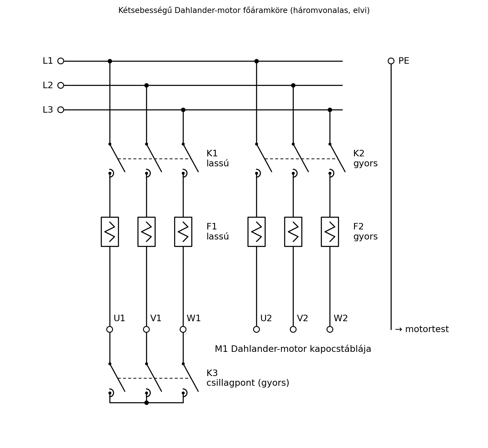
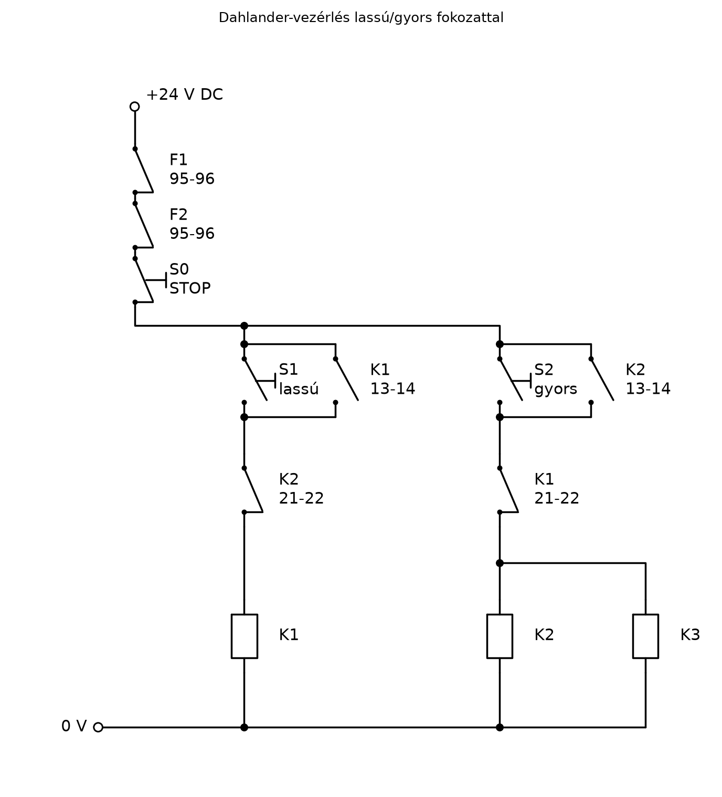
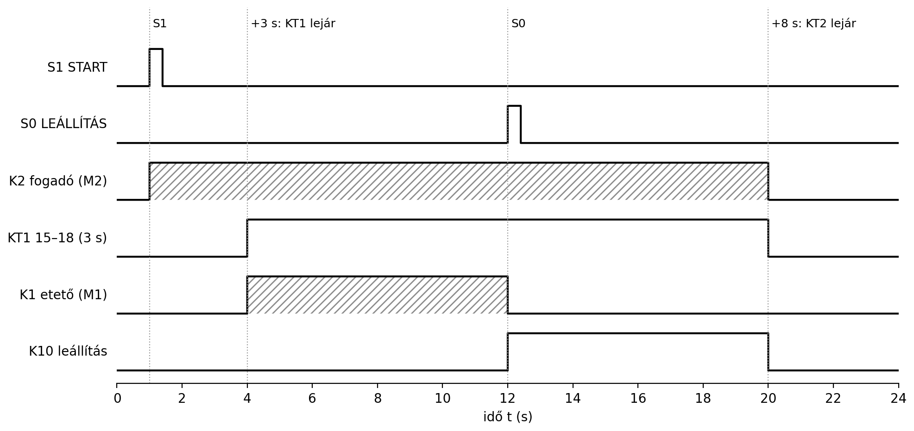

![A3-as tervlap 11 áramúttal. 1–3: X1 L1 L2 L3 N PE, Q0 négypólusú főkapcsoló, Q1 zárlatvédelem, K1 lassú – F1 2,5 A – X1:U1 V1 W1; K2 gyors – F2 4,8 A – X1:U2 V2 W2; K3 az U1 V1 W1 vonalakat csillagponttá zárja; K1–K2 mechanikus retesz; M2 Dahlander-motor PE-vel. 4: F4 – G1 tápegység 230 V AC / 24 V DC – F3 – +24 V sín, 0 V a PE-re kötve. 5: F1 95–96, F2 95–96, S0. 6: S1 ∥ K1 13–14, K2 21–22, K3 21–22, K1 tekercs. 7–8: S2 ∥ K2 13–14, K1 21–22, K2 és vele párhuzamosan K3 tekercs. 9–11: K1 43–44 – H1 LASSÚ, K2 43–44 – H2 GYORS, F1 97–98 ∥ F2 97–98 – H3 ZAVAR. Tükrök a K1, K2, K3, F1, F2 alatt.](figures/img/ve116-4.png)
Képzeld el, hogy egy frisslevegő-ventilátor nappal teljes fordulatszámon, éjszaka viszont csak fele fordulatszámon dolgozna, mert a zaj és az energiafogyasztás is kisebb kell legyen. Ugyanez igaz lehet egy szállítószalagra is: ha két motor egymás után dolgozik, nem indulhat el az etető szalag akkor, amikor a fogadó szalag még nem fut. Ha pedig leáll a sor, előbb az etető szalagnak kell leállnia, a fogadó szalagnak pedig még ki kell ürítenie a rajta lévő anyagot, hogy az ne torlódjon fel a szalagátadásnál. Az ilyen feladatokat hagyományos kontaktoros vezérléssel, reteszelő érintkezőkkel és időrelékkel lehet áttekinthetően, megbízhatóan megoldani. Ebben az alfejezetben a kétsebességű Dahlander-motor vezérlését, a sorrendi indítást és a késleltetett leállítást tanuljuk meg.
Az aszinkron motor fordulatszámát a(z) Fordulatszám-változtatás, Dahlander, frekvenciaváltó és fékezés alfejezetben már bemutatott összefüggés szerint elsősorban a póluspár-szám határozza meg:
ahol a hálózati frekvencia, a póluspár-szám, a szlip. Ha a motor póluspár-száma megduplázódik, az üresjárási fordulatszáma közel a felére csökken. A Dahlander-motor olyan háromfázisú aszinkron motor, amelynek tekercselését kapcsolókkal át lehet kapcsolni, így két, jellemzően arányú fordulatszámot ad. A gyakorlatban elterjedt például a pólusú motor ( / póluspár), amely hálózaton körülbelül és üresjárási fordulatszámot tud (a pólusú motor és ).
A Dahlander-motor kapocstábláján hat csatlakozó kapocs van, jellemzően és jelöléssel. A két fordulathoz tartozó bekötési változatot mindig a motor kapocstáblája vagy adattáblája adja meg. A vezérlés, amit most tervezünk, két kontaktorcsoporttal dolgozik:
Ez a vezérlés a /YY Dahlander-motorra érvényes. A két külön tekercselésű motornál nincs csillagpont-kontaktor (): fokozatonként egy-egy, egymással reteszelt kontaktor kapcsolja a saját tekercset (a motortípusok: Fordulatszám-változtatás, Dahlander, frekvenciaváltó és fékezés).
Az alábbi rajz a főáramkört mutatja háromvonalas jelöléssel (fokozatonként külön hőkioldóval, F1 és F2):

A főáramkörben a és a főérintkezői egymástól független utat adnak a motornak. A érintkező a csoportot zárja össze a csillagponttal. A lassú fokozaton csak húz, a gyorson és egyszerre. Fontos látni, hogy és egyidejű behúzása tilos, mert a motor két eltérő kapcsolási állapotát kötné egymásra, ami fáziszárlatot, a motor tekercselésének károsodását vagy a védelem leoldását okozhatja.
A vezérlés tipikus feszültsége tanműhelyben ; ipari berendezésben lehet . A könyvben a biztonságos, tanulható változatot használjuk. A vezérlőáramkörben a két fokozat hőkioldójának (, ) 95–96 bontóérintkezője és az leállító nyomógomb sorosan a közös tápfeszültségben van, így bármelyik megszakításával minden kontaktor leejt. Az a lassú, az a gyors indítást szolgálja.

Működés. Ha az lassú indítógombot megnyomjuk, a tekercs áramot kap, a záró segédérintkezője párhuzamosan önfenntartást ad, és a főérintkezői behúznak. A bontó segédérintkezője a gyors ágba van kötve, ezért az lenyomása ilyenkor nem tud -t behúzni. Ha a gyors fokozatot akarjuk, előbb -val le kell állítani a rendszert, majd -t kell megnyomni. Ekkor és behúz, a önfenntartó záró érintkezője fenntartja, a bontó reteszelő érintkezője pedig elzárja a ágát. Az átkapcsolás így mindig feszültségmentes állapotból történik, és a reteszelés megakadályozza az egyidejű behúzást.
A gyakorlatban a gyors indítás előtt gyakran bekapcsolás-késleltetést alkalmaznak, hogy a motor először lassú fokozaton felfusson, majd csak utána váltson gyorsra. Ezt egy időrelé is megoldhatja, ha a gyors ág vezérlését késleltetett záró érintkezővel engedélyezzük.
A fenti fő- és vezérlőkör egyetlen tervlapon, az 1. kidolgozott példa motorjának adataival (F1 lassú: 2,5 A, F2 gyors: 4,8 A) és a teljes 24 V DC vezérlőtáppal így néz ki:
Olvasd ki a lapról a reteszeléseket: a lassú K1 ágában a K2 21–22 és a K3 21–22 is ott van – a K1 tehát akkor sem húzhat be, ha valamiért csak a K3 (a csillagpont) maradt behúzva, mert az a lassú fokozatban a hálózati fázisokat zárná rövidre. A gyors ágban a K1 21–22 reteszel; a K3 tekercse a K2-vel párhuzamos, így a csillagpont csak a gyors fokozatban zár. A közös ágban mindkét hőkioldó bontója sorban van: bármelyik fokozat túlterhelése mindent leállít, a H3 ZAVAR lámpát pedig bármelyik hőkioldó 97–98 érintkezője működteti. A 24 V DC-s vezérlőtápot a G1 tápegység adja, kimenete az F3-mal védett; a 0 V-ot a PE-re kötjük (ellenőrizendő: MSZ EN 60204-1), a kontaktortekercseken szabadonfutó dióda vagy gyári tekercsmodul van.
A nagy tehetetlenségű gépet (ventilátor, keverő) nem érdemes közvetlenül a gyors fokozatban indítani: a motor előbb lassan fusson fel, és csak utána váltson. A következő kapcsolásban egyetlen S2 GYORS gombnyomás indítja a teljes folyamatot.
![Automatikus felfutás lassúról gyorsra (Dahlander, 24 V DC) - Alapállapot. K4 = „GYORS kérés” segédrelé, KT1 = meghúzás-késleltetésű időrelé (pl. 3 s; kontaktorra pattintható blokk: 55–56 késleltetett bontó, 67–68 késleltetett záró). Az S2 GYORS gomb a K4-et indítja; a K4 23–24 a lassú K1-et, a K4 33–34 a KT1-et kapcsolja. A KT1 lejártakor az 55–56 bontja a K1-et, a 67–68 a K1 21–22 elengedése után indítja a K2-t és a K3-at (gyors, YY). Az S1 kézi lassú indítás változatlan. A kapocsjelek gyártófüggők (ellenőrizendő).](assets/ve116-diagram-3.png)
Jelútkövetés. (1) S2 → a K4 „GYORS kérés” segédrelé behúz és önfenntartásba megy (K4 13–14). (2) A K4 23–24 a lassú ágon át behúzza a K1-et (az 55–56 még zárt), a K4 33–34 elindítja a KT1-et: a motor lassú fokozatban fut fel. (3) A KT1 lejár (pl. 3 s): az 55–56 nyit, a K1 elenged; a K1 21–22 visszazár. (4) A 67–68 zárt, ezért a K1 21–22 visszazárása után a K2 és a K3 behúz, a K2 13–14 önfenntart: gyors fokozat (YY). (5) S0 → minden elenged, a KT1 alaphelyzetbe áll. A K1 és a K2 közötti reteszelést a K1 21–22 és a K2 21–22 érintkezők adják: a gyors fokozat csak a lassú kontaktor elengedése után kaphat feszültséget. Az S1 kézi lassú indítás változatlanul működik, és lassú üzemből az S2-vel is automatikusan átkapcsolhatunk gyorsra.
Gyorsról lassúra? A fordított irányú közvetlen átkapcsolás (gyors fokozatban járó motor átkapcsolása a lassú tekercselésre) generátoros fékezést és nagy áramlökést okoz, ezért rendszerint csak STOP után engedjük – ezt a fenti kapcsolásban a K2 21–22 a lassú ágban biztosítja (ellenőrizendő: motorgyártói adat, megengedett-e a közvetlen visszakapcsolás).
Szállítószalagoknál a motorok együttműködése nemcsak kényelmi kérdés, hanem gyártási és baleseti feltétel is. Tegyük fel, hogy az etetőszalag, pedig a fogadószalag motorja. Ha nem jár, az -ről érkező anyag felgyűlik, leesik, vagy a fogadó gép eltömődik. Ezért a beindítás sorrendje kötött: előbb a fogadó , és csak utána az etető (az anyagárammal szemben indítunk). A leállítás sorrendje viszont az anyagárammal egyirányú: előbb álljon le az etető , és csak utána a fogadó , amely késleltetve, a kiürülésig fut tovább.
A szabályt kontaktoros reteszeléssel valósítjuk meg. A kontaktor az etető motort, a kontaktor a fogadó motort kapcsolja. A vezérlőágában sorosan van egy záró segédérintkező, így csak akkor kaphat feszültséget, ha már behúzott. A leállításkor a stop az etetőt () azonnal ejti, a fogadót () pedig egy kikapcsolás-késleltetett időrelé a beállított ideig akkor is fenntartja, ha az -t közben megnyomják; a kiürítési idő után a -t az (nyomva tartva vagy újra megnyomva) állítja le.
![Sorrendi indítás szállítószalagon időrelével - K2 a fogadószalag (indul elsőként), K1 az etetőszalag. K2 ága: S0b stop (NC, áthidalva a KT1 késleltetve nyitó záróval) → S2 start ∥ K2 13-14 → K2. K1 ága: K2 23-24 (K1 csak futó K2 mellett húzhat be, K2 leállása K1-et is ejti) → S0a stop → S1 start ∥ K1 13-14 → K1; a KT1 kikapcsolás-késleltetett időrelé tekercse a K1-gyel párhuzamos. Az S0 egy nyomógomb két bontóval: megnyomására K1 azonnal leáll, K2-t a KT1 a kiürítési ideig (8 s) még fenntartja; S0 csak ezután (nyomva tartva vagy újra megnyomva) állítja le K2-t. F1, F2 95-96: a két motor hőkioldója.](assets/ve116-diagram-4.png)
A rajz az anyagáramnak megfelelő sorrendet valósítja meg: a fogadószalag (, ) indul elsőként, az etető () ágában sorosan a 23–24 záró segédérintkezője van, így csak futó mellett húzhat be (és kiesésekor is leáll). A kikapcsolás-késleltetett időrelé tekercse a -gyel párhuzamos; késleltetve nyitó záróérintkezője a ágában az stop gomb bontóját hidalja át. Az megnyomásakor az etető () azonnal leáll, a fogadót () viszont a még a kiürítési ideig fenntartja; csak ezután állítja le az (nyomva tartva vagy újra megnyomva).
A következő idődiagram ezt a működést mutatja egy szemléltető forgatókönyvön: s-nál indítja a fogadót, s-nál az etetőt; s-nál megnyomására az etető azonnal leáll, a fogadó a miatt még s-ig () fut és kiürül, majd s-nál az ismételt leállítja. Az ábra alsó része a Dahlander-motor kapocstábláját mutatja: lassú fokozaton () a táplálás az kapcsokon van (delta), gyors fokozaton () az kapcsokon, az összekötve (kettős csillag). A HTML-kiadásban a forgatókönyv lépésenként lejátszható, kipróbálható a hibás sorrend (etető előbb), és a Dahlander-bekötés lassú/gyors állásba kapcsolható.

Definíció. A bekapcsolás-késleltetett időrelé (on-delay) tekercsének feszültség alá helyezése után a kimeneti érintkezők csak a beállított idő letelte után váltanak. Kikapcsoláskor az érintkezők azonnal visszaállnak.
Definíció. A kikapcsolás-késleltetett időrelé (off-delay) tekercsének feszültségmentesítése után az érintkezők még a beállított ideig megtartják az állapotukat, majd visszaállnak.
Az időrelék bekötésekor meg kell különböztetni a tápfeszültség-kapcsokat (például és ) és a kimeneti érintkezőket (, , , stb. – a pontos számozást a gyártói adatlap adja). A vezérlési rajzon az időrelé tekercsét a szokásos tekercsjel (KT, A1–A2), a késleltetett érintkezőt a késleltetett záró vagy bontó rajzjel mutatja; az ív iránya jelzi, hogy behúzáskor vagy elengedéskor késleltet (lásd a Rajzjelek függeléket).
A két alapfunkción túl a mai (többnyire multifunkciós, funkcióválasztós) időrelék további működési módokat is tudnak; a beállításukhoz a funkciók idődiagramját kell ismerni. Minden diagramon felül az A1–A2 tápfeszültség, ahol van, a B1 vezérlőbemenet, alul a kimeneti érintkező (15–18, záró) állapota látható, közös időtengelyen, beállítással. Az elengedés-késleltetésű relé jellemzően vezérlőbemenettel (B1) dolgozik: a tápja állandó, a késleltetést a B1 megszűnése indítja – ezért nem „a tápot kell lekapcsolni”, ahogy a definícióból elsőre gondolnánk. A meghúzás-késleltetésnél figyeld meg a megszakított időzítést: a t-nél rövidebb tápimpulzus után a kimenet nem zár, és a következő bekapcsolás újra nulláról kezdi az időt.

A funkciók szokásos betűjele (E, R, Wu, Wa, Bi, SD) gyártónként eltér (ellenőrizendő: adatlap) – a beállításnál mindig az adatlap idődiagramját vesd össze a feladattal, ne csak a betűt. A HTML-kiadásban a funkció és az idő állítható, az A1 tápot és a B1 bemenetet kapcsolgatva a diagram valós időben rajzolódik.
Párosítós feladat. Melyik funkció kell? (a) A kompresszor hűtőventilátora a leállás után még 3 percig fusson. (b) Zavarnál a sárga lámpa villogjon. (c) A gép indításakor a kenőszivattyú egyszer, 5 s-ig fusson. (d) A szellőző csak akkor induljon, ha a jelzés 10 s-nál tovább fennáll. (e) A motor csillagban induljon, és 8 s után kapcsoljon deltába. (f) A világítás lekapcsolásakor (a kapcsoló jelének megszűnésekor) a szellőző egyszer, 2 percig járjon. Megoldókulcs: (a) 2. elengedés-késleltetés (R); (b) 5. villogó (Bi); (c) 3. egyszeri impulzus bekapcsoláskor (Wu); (d) 1. meghúzás-késleltetés (E) – a rövidebb jelzés a megszakított időzítés miatt nem indít; (e) 6. Y-Δ funkció (SD); (f) 4. impulzus a lefutó élre (Wa).
A bekapcsolás-késleltetés tipikus alkalmazása például a csillag–delta indítás időzítése, a Dahlander gyors fokozatra kapcsolás késleltetése vagy a szellőzőmotorok indítása. A kikapcsolás-késleltetés pedig a szalagsor leállításakor a kiürítési idő biztosítására, szerszámgépek kenőszivattyújának utófutására vagy biztonsági hűtőventilátor leállítására szolgál.
Időrelét négyféle kivitelben szokás beépíteni (lásd az alábbi tablót): a) moduláris, DIN-sínes multifunkciós készülék, b) foglalatba dugható időrelé, c) a mágneskapcsoló homlokára pattintható késleltető segédérintkező-blokk – ennek késleltetett érintkezőit a második számjegy 5–6 (bontó) és 7–8 (záró) jelöli, például 55–56 és 67–68 –, d) elektronikus kikapcsolás-késleltetésű relé. Ez utóbbinál vigyázni kell: sok típus a késleltetés idejére is tápfeszültséget igényel, ezért az A1–A2 állandó tápot kap, és a késleltetést egy külön vezérlőbemenet (például B1) jelének megszűnése indítja – a pontos bekötést a gyártói rajz adja.
A szalagsor kiürítési idejéhez tehát nem elég „egy időrelét” rendelni: a rajzon és a beszerzéskor is meg kell adni a funkciót és a kivitelt. A HTML-kiadásban a négy kivitel egyenként nézhető.
A fenti sorrendi vezérlés két START gombbal indít, és a fogadószalagot egy második STOP-nyomással állítja le. A gyakorlatban a szalagsort egy START indítja időrelés lépcsőzéssel, és egy LEÁLLÍTÁS gomb állítja le automatikus kiürítéssel. Ehhez két meghúzás-késleltetésű időrelé és egy „leállítás” segédrelé (K10) kell.
![Szalagsor egygombos automatikus indítása és leállítása (24 V DC) - Alapállapot. K2 = fogadószalag (M2), K1 = etetőszalag (M1), K10 = „leállítás” segédrelé, KT1 = indítási lépcső (meghúzás-késleltetés, t1 = 3 s), KT2 = kiürítési idő (meghúzás-késleltetés, t2 = 8 s). S1 START indít, S0 LEÁLLÍTÁS (záró!) a rendezett leállítást kéri, S00 az azonnali leállítás (bontó). Logika: K2 = (S1 ∨ K2) ∧ ¬KT2; K1 = KT1 ∧ K2 ∧ ¬K10; K10 = (S0 ∨ K10) ∧ K2; KT1 tápja K2, KT2 tápja K10. A K2 segédérintkezői (13–14, 23–24, 33–34, 43–44) segédérintkező-blokkal bővítve; a kapocsjelek gyártófüggők.](assets/ve116-diagram-5.png)
Logikai összefoglaló. ; ; ; a KT1 tápja a K2 (23–24), a KT2 tápja a K10 (43–44). Figyeld meg, hogy a K10 bontója csak az etető (K1) ágában van: a fogadó (K2) a leállítás kérése után is jár, egészen a KT2 lejártáig.

Jelútkövetés. (1) S1 (1 s) → a K2 (fogadó) behúz és önfenntart; a K2 23–24 elindítja a KT1-et. (2) 3 s múlva (4 s) a KT1 15–18 zár → a K1 (etető) behúz (a K2 33–34 zárt, a K10 31–32 zárt). (3) S0 LEÁLLÍTÁS (12 s) → a K10 behúz és önfenntart (a K2 43–44 zárt). (4) A K10 31–32 nyit → a K1 azonnal elenged: az etető áll, a fogadó ürít; a K10 43–44 elindítja a KT2-t. (5) 8 s múlva (20 s) a KT2 15–16 nyit → a K2 elenged. (6) A K2 43–44 nyit → a K10 elenged, a KT2 és – a K2 23–24 nyitásával – a KT1 is alaphelyzetbe áll: a vezérlés újraindítható. Az S00 AZONNALI STOP (bontó) a közös ágban mindent azonnal leállít – vészhelyzetben ez kell, nem a rendezett leállítás.
| Szempont | Kétgombos megoldás (fent) | Egygombos automatikus megoldás |
|---|---|---|
| Kezelés | két START, két STOP-nyomás, a kezelőnek kell kivárnia a lépcsőket | egy START, egy LEÁLLÍTÁS, a lépcsőket az időrelék adják |
| Alkatrészek | 2 kontaktor, 1 időrelé | 2 kontaktor, 2 időrelé, 1 segédrelé, segédérintkező-blokk |
| Hibalehetőség | kezelési hiba (elfelejtett második STOP, túl korai etetés) | beállítási és bekötési hiba (rossz időrelé-funkció, hiányzó önfenntartás) |
Feladat (C). Három szalagos sor (M3 → M2 → M1, az M1 a végső fogadó): indításkor 3–3 s-os lépcsők, leállításkor a középső szalag 8 s, a végső fogadó további 6 s kiürítési idővel álljon le. Hány időrelé kell, ha mindent relés vezérléssel oldunk meg? Megoldás: indításhoz két meghúzás-késleltetésű időrelé (M1 → +3 s M2 → +3 s M3), leállításhoz kettő (M3 azonnal áll, +8 s M2, további +6 s M1): összesen 4 időrelé (és egy leállítás-segédrelé). PLC-vel ugyanez néhány programsor, lásd a 32.6 alfejezetet.
A fékezési módok elvét a Fordulatszám-változtatás, Dahlander, frekvenciaváltó és fékezés alfejezet írja le; itt a kontaktoros vezérlésüket rajzoljuk meg. Gyors megállításra szükség van például fűrésznél, köszörűnél, szalagnál; emelőknél és fékmotoroknál a fék a biztonság része.
1. Egyenáramú (DC-injektálásos) fékezés. A kikapcsolt motor két kapcsára egyenáramot vezetünk: az állórész álló mágneses teret hoz létre, amely a forgórészt fékezi. A fékáram rövid ideig a névleges áram kb. 1,5–2,5-szerese (ellenőrizendő: motorgyártói adat; a méretezés számpéldája a fékezést tárgyaló alfejezetben).
![Egyenáramú (DC-injektálásos) fékezés: főkör és vezérlőkör - Alapállapot. Főkör: Q1 → K1 (üzem) → M1. Fékáramkör: a Q1 utáni L1–L2 → T2 fékezőtranszformátor → V1 egyenirányító híd → K2 (fék) két pólusa → két motorkapocs (itt V1 és W1, a K1 után). A K1 és a K2 villamosan (21–22) és mechanikusan reteszelt. Vezérlés: az S0 kettős nyomógomb bontója leállítja a K1-et, záró érintkezője indítja a fékezést; a K2 a KT1 55–56 késleltetett bontójáig (t = fékidő) önfenntart. A T2/V1 méretezése, a fékáram (≈ 1,5–2,5·I_n) és a fékidő: motorgyártói adat (ellenőrizendő).](assets/ve116-diagram-6.png)
Működés. (1) S1 → a K1 (üzem) behúz és önfenntart, a motor jár. (2) Az S0 kettős nyomógomb: a bontója a K1-et ejti, a záró érintkezője – a K1 21–22 visszazárása után – a K2 fékkontaktort és vele párhuzamosan a KT1 időrelét behúzza; a K2 13–14 önfenntart. (3) A K2 a V1 egyenirányító híd kimenetét két motorkapocsra kapcsolja: fékezés. (4) A beállított fékidő után a KT1 55–56 késleltetett bontója nyit, a K2 elenged, a KT1 is. (5) A K1 és a K2 villamosan (21–22) és mechanikusan reteszelt – egyszerre soha nem zárhatnak, különben a hálózat a hídra kapcsolódna. A fékidő beállítása: a motor álljon meg, de a fékáram ne folyjon tovább a szükségesnél, mert a motor csak melegszik tőle. A kész elektronikus DC-fékezőrelé (fékező modul) ugyanezt egy készülékben oldja meg; ilyenkor a gyártó bekötési rajza érvényes.
2. Ellenáramú fékezés fordulatszám-őrrel. A reverzáló kapcsolás (32.2) kiegészítése: STOP után rövid ideig az ellenirány kontaktora húz be, a motor erősen fékez; a megállás pillanatában a B1 fordulatszám-őr (nullfordulat-relé) bont.
![Ellenáramú fékezés fordulatszám-őrrel (vezérlőkör; a főkör a reverzáló kapcsolás, 32.2) - Alapállapot, a motor áll (B1 fordulatszám-őr záró érintkezője nyitva, n ≈ 0). Járó motornál B1 zárt. Az S0 bontója leállítja a K1-et, záró érintkezője behúzza az ellenirány K2 kontaktorát; a K2 13–14 önfenntart, amíg a B1 zárva van. Amikor a fordulatszám n ≈ 0-ra csökken, a B1 nyit, a K2 elenged. Figyelem: AC-4 üzem, nagy áram; a B1 hibájánál (beragadt zárva) a motor ellenirányba indul – csak kockázatértékelés alapján alkalmazható.](assets/ve116-diagram-7.png)
Figyelem. Az ellenáramú fékezés AC-4 üzem, nagy árammal és mechanikai igénybevétellel. Ha a B1 hibás (beragadt zárva), a motor a megállás után ellenirányba indul – ezért csak kockázatértékelés alapján, megfelelő fordulatőrrel alkalmazható.
3. Fékmotor (rugóerőtárolós elektromágneses fék). A fékmotor fékje feszültségmentesen fékez (a rugó szorítja a fékbetétet), feszültség alatt a fékmágnes (Y1) oldja. A fékmágnes a motor kapocsdobozába épített egyenirányítóról kap feszültséget.
![Fékmotor rugóerőtárolós fékjének bekötése: váltakozó oldali (a) és egyenáramú oldali (b) bontás - Elvi rajz. A fékmágnes (Y1) a motor kapocsdobozába épített egyenirányítóról (V2) kap feszültséget; a fék feszültség alatt OLD, feszültségmentesen a rugó befékez. (a) Az egyenirányító a motorkapcsokról (U1–V1) kap táplálást: a K1 bontása után a motor remanens feszültsége és a tekercs önindukciója lassítja a befékezést (lassú, lágy). (b) Kiegészítő érintkező (K1, a K1-gyel együtt bont) az egyenáramú oldalon: a fék gyorsan, rövid úton fékez. A pontos bekötés a motorgyártó rajza szerint (ellenőrizendő); emelőknél a fék a biztonság része.](assets/ve116-diagram-8.png)
A váltakozó oldali bontásnál (a) az egyenirányító a motorkapcsokról kap táplálást: a K1 bontása után a lassan lecsengő motorfeszültség és a fékmágnes önindukciója miatt a fék lassabban, lágyabban fog be. Az egyenáramú oldali bontásnál (b) egy, a K1-gyel együtt bontó kiegészítő érintkező az egyenáramú körben gyors befékezést ad (rövid fékút, például emelőknél). A bekötést mindig a motorgyártó rajza szerint végezzük (ellenőrizendő: motorgyártói bekötési rajz).
Feladat (B). Egy DC-fékezésű fűrész kifutása fék nélkül 12 s, fékkel mérve 2,5 s. Mekkora fékidőre állítod a KT1-et? Megoldás: a fékidő legyen valamivel hosszabb a mért 2,5 s-nál, hogy a motor biztosan megálljon, de ne sokkal: kb. 3 s. A 12 s-os értéket nem használjuk – az csak azt mutatja, mennyit nyerünk a fékezéssel.
Feladat (D). Fékezés után a motor tovább melegszik, a K2 fékkontaktor nem enged el, a fékáram folyamatosan folyik. Mi a hiba? Megoldás: a K2 önfenntartását csak a KT1 55–56 bonthatja; ha a K2 nem enged el, a KT1 nem jár le: hibás vagy túl nagy időre állított időrelé, vagy rossz kapocsra (nem a késleltetett 55–56-ra) kötötték a bontót. Feszültségmentes állapotban ellenőrizd a KT1 beállítását és az 55–56 ellenállását (alaphelyzetben 0 Ω), majd próbaüzemben a lejárás utáni nyitást.
A kontaktoros motorvezérlésekben a védelmek és a reteszek egy áramköri láncot alkotnak. Szabály. A motorvédő hőkioldó (– NC érintkező) mindig a vezérlőáramkör közös tápágába, a leállító nyomógombok és a kontaktor tekercsek elé kerüljön, hogy kioldáskor minden vezérlés feszültségmentes legyen. Az STOP nyomógomb ugyanígy minden kontaktort ejt. A vészleállító ettől külön készülék (lásd a Direktindítás, önfenntartás és kezelőszervek alfejezetet).
A reteszelés elektromos és mechanikus lehet. Definíció. Az elektromos reteszelés két kontaktor bontó segédérintkezőjének keresztbekötése: az egyik kontaktor bontó érintkezője a másik tekercsének ágában van. A mechanikus reteszelés fizikai szerkezet, amely megakadályozza, hogy két kontaktor egyszerre mechanikusan behúzott állapotba kerüljön. A gyakorlatban a két megoldást gyakran együtt alkalmazzák, mert ha az egyik meghibásodik, a másik még megakadályozza az egyidejű behúzást (egymás tartalékai).
Továbbvitt eredmény. Az itt megismert reteszelési, sorrendi és időrelés logikát fogjuk használni a Vezérlések hibakeresése alfejezetben, ahol a tipikus hibák okait kell méréssel megtalálni.
Szabvány. A gépek villamos berendezéseire vonatkozó MSZ EN 60204-1 jellegű előírások megkövetelik, hogy a váratlan indítás ne okozzon veszélyt, a reteszelések és a vészleállítási körök működését egyértelműen lehessen ellenőrizni, és a motorvezérlést a gyártó által megadott üzemi és hibaállapotokra méretezzék (ellenőrizendő: a pontos szabványkiadás és a magyarországi jogszabályok hivatkozása). A kontaktorok kiválasztásakor az MSZ EN 60947 sorozat vonatkozó részei, a használati kategóriák () és a gyártói kapcsolási gyakorisági adatok a mérvadók (ellenőrizendő: aktuális kiadás).
Az automatikus motorvezérlések legelterjedtebb fajtája a szintvezérelt szivattyú: tartályfeltöltés, akna- és zsompürítés, ciszterna. Elv: két szintérzékelő dolgozik – a B1 alsó és a B2 felső úszó. A szivattyú a tartály kiürülésekor (alsó szint) indul, a felső szintnél leáll, és csak akkor indul újra, ha a szint ismét az alsó úszó alá csökkent. A két kapcsolási pont közötti sáv a hiszterézis: nélküle a szivattyú egyetlen szintérzékelő körül másodpercenként ki-be kapcsolna („kattogna”), ami a kontaktort és a motort is tönkreteszi.
A lap olvasása. A főkör egy direktindítás: Q1 főkapcsoló, Q2 motorvédő kapcsoló (a motor névleges áramára állítva), K1, motor. A vezérlőkör 230 V AC (L1–N, F2 védelemmel). A közös ágban a Q2 13–14 (kioldott motorvédőnél nincs vezérlés) és a B3 szárazonfutás-védelem bontója: minimumúszó vagy elektródás szintrelé a kút/akna legalsó szintjén – ha nincs víz, egyik üzemmódban sem indulhat a szivattyú. Az S3 háromállású választókapcsoló (KÉZI–0–AUTO) két érintkezője választja ki az ágat: KÉZI állásban a szokásos S0/S1 önfenntartó vezérlés, AUTO állásban az úszók. Jelzés: H1 ÜZEM, H2 ZAVAR (kioldott Q2 vagy szárazonfutás), H3 AUTO üzemmód.
Jelútkövetés AUTO üzemben. (1) A szint az alsó úszó alá csökken → a B1 zár → a K1 behúz, a szivattyú tölt. (2) A K1 23–24 a B1-gyel párhuzamosan önfenntartást ad. (3) A szint nő, a B1 nyit – a K1 a 23–24-en tovább tart. (4) A szint eléri a felső úszót → a B2 bontója nyit → a K1 elenged. (5) A szint lassan csökken, a B2 visszazár, de a B1 nyitva és a K1 23–24 nyitva van: nincs indítás, amíg a szint ismét az alsó úszó alá nem ér. A HTML-kiadásban a lap kezelhető: az úszók gombjaival játszd le a tartály ürülését és telését, és figyeld az idődiagramon a hiszterézist.
Hidrofor (nyomáskapcsolós) változat. Nyomás alapú vízellátásnál a két úszó helyett egyetlen nyomáskapcsoló (B4) dolgozik, amelynek hiszterézise beépített: például 3,0 bar-nál bekapcsol, 4,5 bar-nál kikapcsol (beállítás: gyártói adat, ellenőrizendő). Az AUTO ágban a B1–B2–K1 23–24 csoport helyére a B4 egyetlen érintkezője kerül; egyfázisú változatát az Egyfázisú aszinkron motorok alfejezet teljes lapja mutatja.
Feszültség-visszatérés. AUTO üzemben a szivattyú hálózatkimaradás után magától elindulhat, ha a szint alacsony – ez itt szándékos (önműködő berendezés), de csak akkor megengedett, ha a kockázatértékelés ezt elfogadja, és a gépen jelzés figyelmeztet az önműködő indulásra.
Feladat (B). Aknaürítő (zsomp) szivattyút kell vezérelni: magas szintnél induljon, alacsony szintnél álljon le. Mit kell megváltoztatni a fenti AUTO ágban? Megoldás: a két úszó szerepét kell felcserélni: az indító érintkező a felső úszó záró érintkezője (zár, ha a szint magas), a leállító az alsó úszó bontó érintkezője (nyit, ha a szint alacsony); az önfenntartó K1 23–24 továbbra is az indító érintkezővel párhuzamos. (A szárazonfutás-védelmet ilyenkor gyakran maga az alsó úszó adja.)
Feladat (D, mérés). AUTO állásban a szivattyú nem indul, a tartály üres, a H2 ZAVAR nem világít. Feszültség alatti, felügyelt mérésnél (műhelyi tanpanel) az N-hez képest: az S3 AUTO (23–24) kimenetén 230 V, a B2 kimenetén 230 V, a B1 kimenetén 0 V. Mi a hiba? Megoldás: üres tartálynál a B1-nek zárva kellene lennie; a bemenetén van feszültség, a kimenetén nincs, tehát a B1 nem zár: az úszó beakadt (vagy a kábele szakadt). Feszültségmentesítés után a B1 ellenőrzése és tisztítása következik.
A logikai elemzést a Logikai kapuk, számrendszerek és a relé helyett logika alfejezet, a PLC-s megvalósítást (ugyanez létradiagramban) a 32.6 alfejezet 3. feladata mutatja.
Valós eset. Egy üzemben kétsebességű elszívóventilátort szereltek. A szerelő a gyors fokozat kontaktorát bekötötte, de a bontó reteszelő érintkezőjét kihagyta a gyors ág ( és tekercs) elől. Az átkapcsolás során a kezelő a lassúról gyorsra váltott; mivel a retesz nem működött, rövid időre mellett és is behúzott: a a által táplált kapcsokat csillagponttá zárta, ami háromfázisú zárlat. A hálózati kismegszakító leoldott, a motor kapocstáblája és a kontaktor érintkezői is jelentősen megsérültek. A tanulság: a reteszelő érintkezők nem díszek, hanem a vezérlés biztonságának alapelemei. Beüzemelés előtt mindig próbát kell tenni: behúzott állapotában lenyomása nem húzhatja be -t.
A 32. fejezet vezérlései egy helyen; vizsgán és munkahelyen ebből indulj ki, a részletes rajz a hivatkozott alfejezetben van. Az időrelé betűjele gyártófüggő (E: meghúzás-késleltetés, R: elengedés-késleltetés, SD: csillag–delta).
| Feladat | Kapcsolás | Kontaktor, relé | Retesz | Időrelé | Kat. | Hol |
|---|---|---|---|---|---|---|
| egy gép indítása | direktindítás | K1 | – | – | AC-3 | 32.1 |
| több kezelőhely | soros STOP, párhuzamos START | K1 | – | – | AC-3 | 32.1 |
| beállítás, léptetés | S3 választó vagy kétérintkezős gomb | K1 | – | – | AC-4 | 32.1 |
| forgásirányváltás | reverzáló | K1, K2 | villamos + mechanikus (+ gomb) | – | AC-3/AC-4 | 32.2 |
| irányváltás pályavégen | végálláskapcsolós | K1, K2 | mint fent + végállás | ingánál E | AC-3/AC-4 | 32.2 |
| indítóáram csökkentése | Y-Δ | K1–K3, KT1 | K2–K3 | SD vagy E | AC-3 | 32.3 |
| két fordulatszám | Dahlander | K1–K3 | K1 és K2/K3 | – | AC-3 | 32.4 |
| lassúról automatikusan gyorsra | Dahlander időzítéssel | K1–K3, K4, KT1 | K1 és K2/K3 | E | AC-3 | 32.4 |
| szalagsor sorrendje | sorrendi indítás | K1, K2, KT1 | K2 záró a K1 ágában | R | AC-3 | 32.4 |
| egygombos indítás és kiürítés | automatikus sorrend | K1, K2, K10, KT1, KT2 | K2 záró a K1 ágában | 2 × E | AC-3 | 32.4 |
| gyors megállás | egyenáramú fékezés | K1, K2, KT1 | K1–K2 | E | AC-3, K2: adatlap | 32.4 |
| gyors megállás | ellenáramú fékezés | K1, K2, fordulatőr | K1–K2 | – | AC-4 | 32.4 |
| szintszabályozás | kétpontos szivattyú | K1 | – (KÉZI–0–AUTO) | – | AC-3 | 32.4 |
| rugalmas, bővíthető logika | PLC-s változatok | K1, … és PLC | külső villamos retesz is | PLC-időzítő | feladat szerint | 32.6 |
Közös szabályok. (1) A STOP, a vészleállító és a védelmek bontói a közös ágban, sorosan vannak. (2) A START gomb az önfenntartó érintkezővel párhuzamos. (3) Egymást kizáró kontaktorok kölcsönös bontó érintkezővel reteszeltek; ahol az egyidejű behúzás zárlatot okozna, mechanikus retesz is kell. (4) Az időrelénél a funkciót (nem csak a betűjelet) az adatlap idődiagramja alapján választjuk.
Gyakorlás: ennek az alfejezetnek a kidolgozott példái, gyakorlatai és megoldással ellátott feladatai az Összefoglaló feladatgyűjtemény villanyszerelő tanulóknak című kötet 32.4 szakaszában találhatók.
A kétsebességű Dahlander-motor egyetlen átkapcsolható tekercseléssel két pólusszámot, így két fordulatszámot ad. A vezérlésben a lassú fokozatot, és együtt a gyors fokozatot kapcsolja; és egyidejű behúzását elektromos és lehetőleg mechanikus reteszelés akadályozza meg. A sorrendi indításnál a segédzáró érintkezője a ágába kerül, így az etető motor csak a fogadó motor után indulhat; a leállításnál az etető azonnal leáll, a kikapcsolás-késleltetett időrelé pedig a szalag kiürítéséig fenntartja a fogadó -t. Az időrelék on-delay vagy off-delay típusa a működési sorrendhez igazodik. A motorvédő hőkioldó – érintkezője mindig a közös vezérlőtápban van, hogy kioldáskor minden kontaktort leejtsen. Továbbvitt eredmény. A reteszelések, sorrendi és időrelés logikák ismerete elengedhetetlen a Vezérlések hibakeresése alfejezetben, ahol a mérési és hibaelemzési módszereket építjük rá erre a kapcsolási alapra.